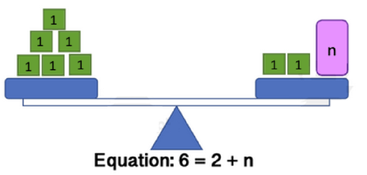
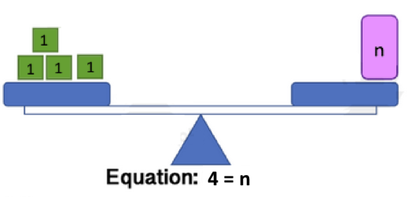

Print preview
Section 6.2 Episode 2: Solving Equations Using Addition and Subtraction
Episode 2 Key Terminology.
In the previous episode, we learned how to check whether a given number is a solution to an equation.
In this episode, we will find the solutions ourselves from scratch. Finding the solutions from scratch is called solving the equation.
When we solve the equation, we think of the equation like a balance. For example, the image below is a visual representation of the equation
\begin{equation*}
6=2+n
\end{equation*}
because the left side holds 6 units of weight, the right side holds 2+n units of weight, and the two sides are equally balanced.

To Keep the Balance When Working with an Equation.
Whatever action you perform on the left side of the equation, perform exactly the same action on the right side of the equation.
For example, in the equation
\begin{equation*}
6=2+n
\end{equation*}
We can subtract 2 on the right side, as long as we also subtract 2 on the left side, and the balance will be preserved:
\begin{equation*}
6-2=2+n-2
\end{equation*}
-
\(6-2\) becomes 4
So in the end, we get the following statement about \(n\text{:}\)
\begin{equation*}
4=n
\end{equation*}
This means that \(n=4\) is a solution to the equation \(6=2+n\text{.}\)
In the picture, this is like taking 2 blocks off the left and right side of the balance:

To Solve Equations of the Form [Variable] + [A Number] = [Another Number]:
-
Subtract [A Number] from both sides of the equation.
Example 6.2.3.
Solution: We subtract 5 from both sides of the equation:
\begin{equation*}
x+5-5 = 13-5
\end{equation*}
On the left, the added 5 and the subtracted 5 cancel each other out. On the right side, the \(13-5\) becomes 8. So we get the solution:
\begin{equation*}
x=8
\end{equation*}
Example 6.2.4.
Solution: We subtract \(\frac{1}{3}\) from both sides of the equation:
\begin{equation*}
C=1-\frac{1}{3}
\end{equation*}
\begin{equation*}
C = \frac{3}{3}-\frac{1}{3}
\end{equation*}
\begin{equation*}
C=\frac{2}{3}
\end{equation*}
Example 6.2.5.
Solution: We subtract 3 from both sides of the equation:
\begin{equation*}
N+3-3=1-3
\end{equation*}
\begin{equation*}
N=-2
\end{equation*}
To Solve Equations of the Form [Variable] - [A Number] = [Another Number]:
-
Add [A Number] to both sides of the equation.
Example 6.2.6.
Solution: We add 2 to both sides of the equation:
\begin{equation*}
x-2+2=7+2
\end{equation*}
On the left side, the added 2 and the subtracted 2 cancel out. On the right side, the 7+2 becomes 9.
\begin{equation*}
x=9
\end{equation*}
Example 6.2.7.
Solution: We add 1/4 to both sides of the equation:
\begin{equation*}
x-\frac{1}{4}+\frac{1}{4}=\frac{1}{2}+\frac{1}{4}
\end{equation*}
On the left side, the added 1/4 and the subtracted 1/4 cancel out. On the right side, we add the fractions by making them have common denominators:
\begin{equation*}
x=\frac{1}{2}+\frac{1}{4}
\end{equation*}
\begin{equation*}
x=\frac{2}{4}+\frac{1}{4}
\end{equation*}
\begin{equation*}
x=\frac{3}{4}
\end{equation*}
Notice Something Neat!
Addition and subtraction are opposite actions. If your variable is being affected by addition, use subtraction. If your variable is being affected by subtraction, use addition.
Equations give us a way to take tricky or complicated problems and break them down into simple steps.
Example 6.2.8.
You don’t know the balance in your bank account yesterday, so represent it by a variable, B. This morning, you deposited $50.23, and now your bank account balance is $18.16. Figure out how much money was in your account yesterday.
Solution:
-
The amount of money in our account yesterday is being represented by B. Let’s create an expression for the amount of money in our account today. Since we added 50.23 to our account, the amount of money in our account today can be represented by the expression\begin{equation*} B+50.23 \end{equation*}
-
We know that the amount of money in our account today is 18.16. Let’s write an equation to represent this known fact.\begin{equation*} B+50.23=18.16 \end{equation*}
-
Now, we have an equation we can solve for B. We subtract 50.23 from both sides:\begin{equation*} B + 50.23 - 50.23 = 18.16-50.23 \end{equation*}\begin{equation*} B=-32.07 \end{equation*}
In other words, yesterday, our account was overdrawn, and the balance was negative $32.07.
Worksheet Season 6, Episode 2 Practice Problems
1.
Solve the following equations:
(a)
\(x+7=15\)
(b)
\(n-\frac{3}{5}=\frac{2}{5}\)
(c)
\(y-9=4\)
(d)
\(p+12=-3\)
(e)
\(a+3.5=10\)
(f)
\(q-(-6)=14\)
(g)
\(b-2.75=6.25\)
(h)
\(r+(-8)=5\)
(i)
\(m+\frac{1}{4}=\frac{5}{4}\)
(j)
\(s-11=-20\)
(k)
\(t+0.6=2.1\)
(l)
\(h-13=0\)
(m)
\(u-4.8=-1.2\)
(n)
\(c+(-3.4)=-7.9\)
(o)
\(v+\frac{7}{8}=2\)
(p)
\(d-(-2.5)=6\)
(q)
\(w-\frac{5}{6}=\frac{1}{6}\)
(r)
\(z+\frac{9}{10} = \frac{19}{10}\)
(s)
\(k+25=40\)
(t)
\(j-1.25=3.75\)
2.
You don’t know the amount of money you had in your bank account yesterday, so you represent it by a variable, \(M\text{.}\) You spent $41 this morning.
(a)
Write down an expression that represents the amount of money you have in your bank account now.
(b)
You check your bank account and find that your current balance is $210. Write down an equation that expresses this known fact.
(c)
Solve the equation from (b) to figure out how much money you had in your account yesterday.
Interlude: Equality Explorer.
Play around with this interactive tool for the University of Colorado’s PhET simulations